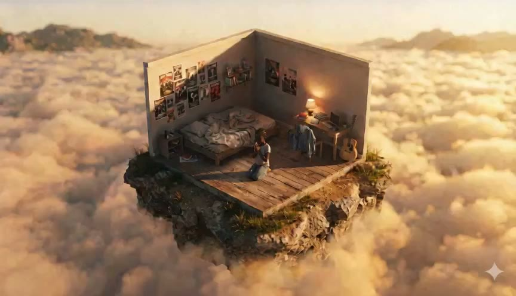
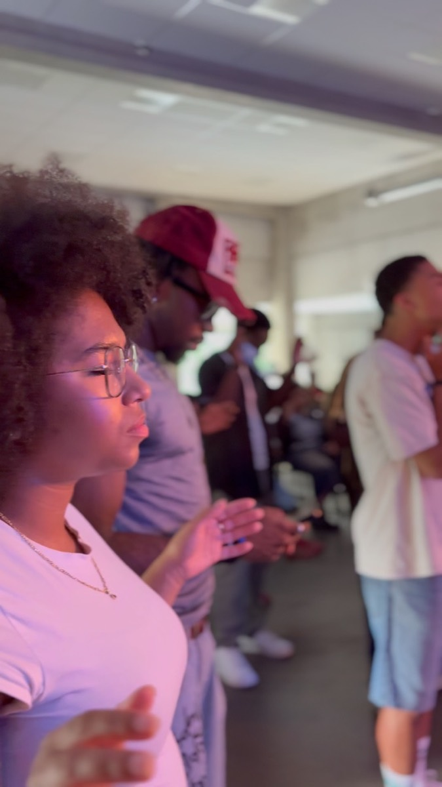
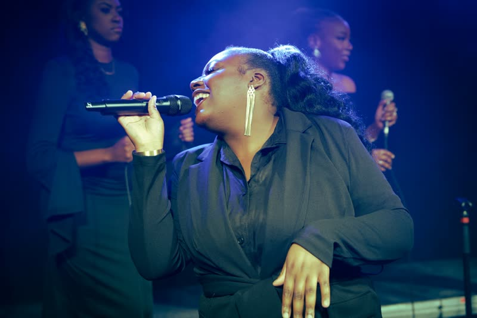
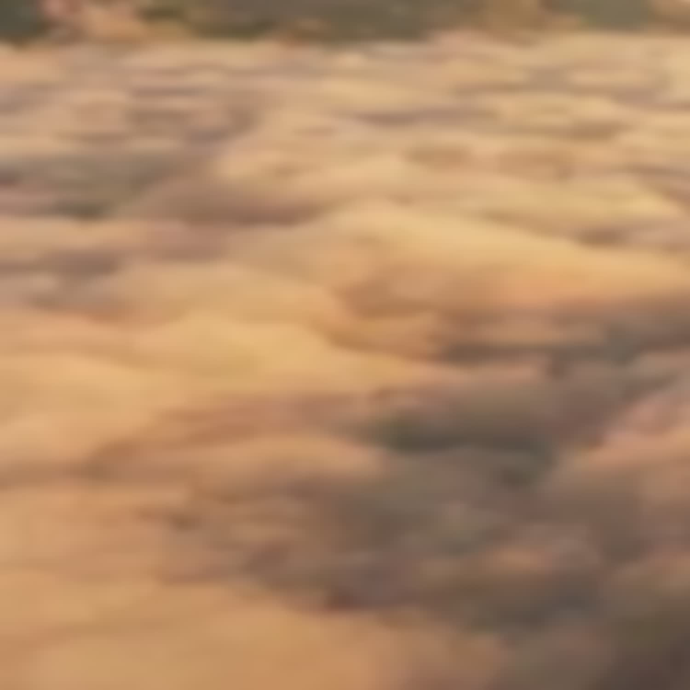
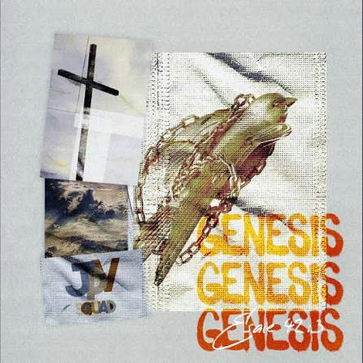
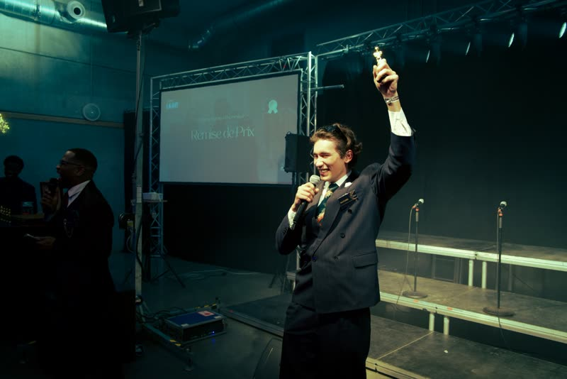

Une soirée de communion, de partage et de célébration, où la jeunesse de Gembloux se rassemble autour d’une cause qui la dépasse : bâtir la maison de ceux qui viendront après.
2026
Gala
Le Gala Héritage
Samedi 14 novembre 2026 — Gembloux
Le Gala Héritage est le rendez-vous annuel de la JPV. Un dîner de gala porté de bout en bout par la jeunesse : l’accueil, le programme, la louange, le service en salle. Tenue de soirée, table dressée, et une soirée pensée pour être vécue ensemble.
Un moment joyeux, vécu dans la présence de Dieu : on y célèbre, on y apprend, on en repart nourri. Les places sont limitées et la réservation est obligatoire : l’équipe confirme chaque demande avant la soirée.
Samedi 14 novembre 2026 — 17h30
Gembloux (5030), Belgique